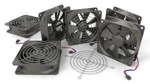

System Fans
System fans are essential components in modern computer systems that play a crucial role in maintaining optimal thermal conditions and preventing overheating. They are responsible for circulating air and dissipating heat generated by various components such as the central processing unit (CPU), graphics processing unit (GPU), and other heat-producing components.
Types of System Fans
There are several types of system fans found in computer systems, each designed to cool specific components or areas:
- CPU Fan: The CPU fan is typically mounted directly on top of the CPU heatsink and is responsible for removing heat generated by the CPU. It is one of the most critical fans in a computer system as the CPU is a significant heat source.
- Case Fans: Case fans are installed inside the computer case and help circulate air to cool various components, such as the motherboard, graphics card, and storage devices. Typical case fan locations include the front, rear, and sometimes the side panels of the case.
- GPU Fan: High-performance graphics cards often have their own dedicated GPU fans, which are designed to cool the graphics processing unit (GPU) and associated components on the graphics card.
- Power Supply Fan: The power supply unit (PSU) typically has its own fan to dissipate heat generated by the power supply components and maintain proper cooling for the entire system.
- Chipset/VRM Fans: Some motherboards and graphics cards may have additional fans specifically designed to cool the chipset or voltage regulator modules (VRMs) that power the CPU and GPU.

Fan Characteristics
System fans are characterized by various factors that impact their performance and efficiency:
- Fan Speed: Fan speed is measured in revolutions per minute (RPM) and determines the airflow rate generated by the fan. Higher fan speeds generally result in increased airflow and better cooling performance.
- Fan Size: Fan size is typically measured in millimeters and refers to the diameter of the fan. Common fan sizes include 80mm, 92mm, 120mm, and 140mm. Larger fans can move more air at lower speeds, resulting in quieter operation.
- Noise Level: System fans can generate varying levels of noise depending on their design, speed, and materials used. Noise levels are typically measured in decibels (dB), with lower noise levels being more desirable for a quieter computing environment.
- Airflow and Static Pressure: Airflow measures the volume of air moved by the fan, typically expressed in cubic feet per minute (CFM). Static pressure refers to the fan's ability to overcome resistance and push air through obstructions like heatsinks and grilles.
Fan Control and Monitoring
Modern computer systems often include fan control and monitoring capabilities to ensure optimal cooling performance and noise levels. This can be achieved through various methods:
- BIOS/UEFI Settings: The system's Basic Input/Output System (BIOS) or Unified Extensible Firmware Interface (UEFI) may provide options for configuring fan speeds, setting temperature thresholds, and adjusting fan profiles.
- Fan Control Software: Third-party software utilities or applications provided by the motherboard or graphics card manufacturers can be used to monitor fan speeds, temperatures, and adjust fan settings for optimal performance.
- Fan Headers: Most motherboards have dedicated fan headers that allow for the direct connection of system fans. These headers can provide power and control signals to the fans, enabling automatic fan speed adjustments based on temperature sensors.
Importance of System Fans
System fans play a vital role in computer systems by ensuring proper cooling and thermal management. Adequate cooling is essential for maintaining component reliability, preventing overheating and throttling (performance reduction), and extending the lifespan of critical components like the CPU and GPU.
Proper selection, configuration, and maintenance of system fans are crucial for optimal system performance and stability. Regularly cleaning fans and heatsinks, monitoring temperatures, and adjusting fan settings can help maintain a well-cooled and efficient computer system.